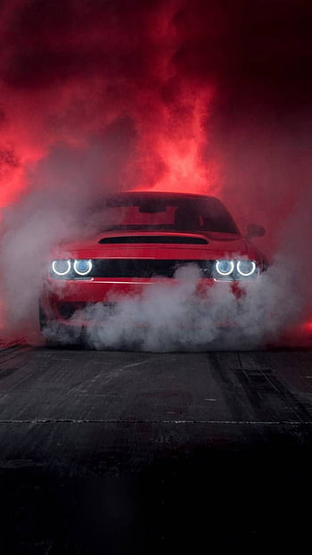

Lamborghini
Lamborghini, to marka, która stanowi kwintesencję ekstrawagancji, elegancji i przede wszystkim niesamowitej mocy. Historia tego włoskiego producenta luksusowych samochodów sportowych sięga lat 60. XX wieku, kiedy Ferruccio Lamborghini postanowił wywrzeć konkurencję na rynku samochodowym, tworząc pojazdy, które miały nie tylko przewyższać konkurencję, ale także podnosić poprzeczkę w dziedzinie designu i wydajności.
Początki Lamborghini są związane z duchem wyzwania i niezależności. Ferruccio Lamborghini, znany z produkcji luksusowych traktorów, postanowił zawojować świat samochodowy, konkurując z ówczesnymi gigantami, takimi jak Ferrari. W efekcie powstała marka, której emblematyczny byk w logo symbolizuje siłę, determinację i agresję, charakterystyczne dla każdego samochodu Lamborghini.
Pierwszym modelem, który wprowadził markę na światową scenę, był Lamborghini Miura. Debiutował on w 1966 roku, zdobywając uznanie jako jeden z pierwszych samochodów o układzie mid-engine, z silnikiem umieszczonym z tyłu pojazdu. To właśnie Miura ustanowiła nowe standardy dla samochodów sportowych, łącząc elegancję z doskonałymi osiągami.
Lamborghini nie ogranicza się jedynie do produkcji samochodów - to prawdziwa legenda motoryzacji, wokół której krążą emocje i fascynacja. Każdy model marki, czy to Huracán, Aventador czy Urus, to połączenie nowoczesnych technologii, wysokiej jakości materiałów i ekstrawaganckiego designu.
Oparte na innowacjach silniki V10 i V12, które napędzają te auta, to prawdziwe dzieła sztuki. Soundtrack generowany przez te potężne jednostki napędowe to prawdziwa symfonia dla miłośników motoryzacji. Lamborghini nie tylko spełnia oczekiwania pod względem prędkości i mocy, ale również oferuje doświadczenie prowadzenia, które przekracza granice zwykłego podróżowania.
Wnętrza samochodów Lamborghini są utrzymane w najwyższym standardzie luksusu. Kierowca i pasażerowie zanurzają się w komfortowym wnętrzu, gdzie najnowsze technologie łączą się z wykwintnymi materiałami, tworząc unikalne i ekskluzywne środowisko.
Lamborghini to nie tylko producent samochodów, to styl życia, wyznaczający nowe standardy w świecie motoryzacji. Każde auto z tej marki to nie tylko środek transportu, ale manifestacja pasji, wyrażenie indywidualności i wstęp do elitarnego klubu miłośników szybkich, ekskluzywnych samochodów. Lamborghini to symbole prestiżu, wyjątkowości i doskonałej inżynierii, które nieustannie podbija serca kierowców na całym świecie.

Bugatti
Bugatti, to nie tylko marka samochodów, to manifestacja luksusu, osiągów i perfekcji inżynieryjnej. Historia tego francuskiego producenta zaczyna się w 1909 roku, kiedy to włoski inżynier i projektant Ettore Bugatti założył firmę Bugatti Automobiles SAS. Od tego czasu Bugatti stała się synonimem szybkości, elegancji i niekwestionowanego prestiżu.
Wśród modeli, które na zawsze wpisały się w kartę historii marki, znajduje się ikoniczny Bugatti Veyron. Debiutował w 2005 roku jako najbardziej zaawansowany technologicznie i najszybszy samochód produkcyjny na świecie. Z napędem 4x4 i potężnym silnikiem W16 o mocy ponad 1000 koni mechanicznych, Bugatti Veyron podniosła poprzeczkę w dziedzinie osiągów i prędkości, osiągając imponującą barierę 400 km/h.
Następca Veyrona, czyli Bugatti Chiron, to kolejny kamień milowy w historii motoryzacji. Zadebiutował w 2016 roku, napędzany jeszcze bardziej potężnym silnikiem W16, który generuje niewyobrażalne 1500 koni mechanicznych. Chiron zdobył uznanie nie tylko ze względu na swoje osiągi, ale także za unikalny design i niezrównaną wygodę jazdy. To prawdziwe dzieło sztuki, które podkreśla pozycję Bugatti jako producenta najbardziej ekskluzywnych i niesamowitych samochodów na świecie.
Bugatti nie tylko kształtuje przyszłość motoryzacji pod względem prędkości, ale również kreuje nowe standardy w dziedzinie designu. Każdy detal w Bugatti jest starannie przemyślany i wykonany z najwyższą precyzją. Niezwykłe wzornictwo, używanie najwyższej jakości materiałów, takich jak włókno węglowe czy skóra, sprawiają, że każdy model Bugatti to prawdziwe dzieło sztuki na czterech kołach.
Bugatti nieustannie podkreśla swoje miejsce w hierarchii supercarów, oferując nie tylko nadzwyczajne osiągi, ale także komfort i luksus na najwyższym poziomie. Wnętrza samochodów Bugatti są jak ekskluzywne przestrzenie, w których elegancja i funkcjonalność idą w parze.
Niezależnie od tego, czy to Chiron, Veyron czy inne limitowane serie, Bugatti pozostaje symbolem przepychu, innowacji i nieosiągalnego prestiżu. Każdy, kto wsiada za kierownicę Bugatti, doświadcza nie tylko jazdy, ale również uczucia bycia częścią ekskluzywnego klubu pasjonatów, dla których Bugatti to nie tylko samochód, ale wyraz najwyższego luksusu i mocy.
Dodge
Dodge, to amerykańska marka samochodów, której historia sięga początków XX wieku. Założona w 1900 roku przez braci Johna i Horace'a Dodge, firma początkowo specjalizowała się w produkcji komponentów dla innych producentów samochodów. Jednak wkrótce zdecydowali się na własną markę, co zapoczątkowało bogatą historię tej ikonicznej marki.
Dodge od zawsze był związany z duchem innowacji i niekonwencjonalności. W okresie międzywojennym marka zdobyła uznanie dzięki wprowadzeniu nowatorskich rozwiązań technicznych, takich jak pierwsza skrzynia biegów na masową skalę i pionierskie silniki. Marka ta odegrała także kluczową rolę w produkcji samochodów wojskowych podczas obu wojen światowych, co tylko potwierdzało jej zaangażowanie w rozwój przemysłu motoryzacyjnego.
Jednak to w latach 60. i 70. Dodge zyskał rozpoznawalność dzięki produkcji potężnych muscle carów. Modele takie jak Dodge Charger czy Challenger stały się ikonami tego okresu, reprezentując wolność, siłę i buntowniczy duch epoki. Te samochody wyznaczały nowe standardy w dziedzinie osiągów i stylu, zdobywając serca miłośników szybkich samochodów na całym świecie.
Dodge kontynuował swoją drogę, wprowadzając do swojej oferty różnorodne modele, obejmujące zarówno potężne pick-upy, jak Ram, jak i rodzinne SUV-y, takie jak Dodge Durango. Każdy z tych modeli charakteryzuje się nie tylko imponującą siłą, ale również praktycznością i wszechstronnością, co sprawia, że marka ta jest obecna w różnych segmentach rynku samochodowego.
Jednak to szczególnie modele z linii muscle carów, takie jak Dodge Challenger Hellcat czy Dodge Charger SRT, wyróżniają się potężnymi silnikami i charakterystycznym designem. Te auta, napędzane silnikami V8, wciąż niosą dziedzictwo tradycji muscle carów, przynosząc niezapomniane wrażenia z jazdy.
Dodge, to nie tylko producent samochodów, to symbol amerykańskiego motoryzacyjnego ducha. Nieustannie ewoluuje, dostosowując się do zmieniających się potrzeb rynku, jednak zawsze pozostaje wierny swoim korzeniom - oferując moc, styl i niepowtarzalne doznania za kierownicą. To marka, która nie tylko kreuje samochody, ale również kształtuje kulturę motoryzacyjną, inspirując kolejne pokolenia miłośników szybkich aut.